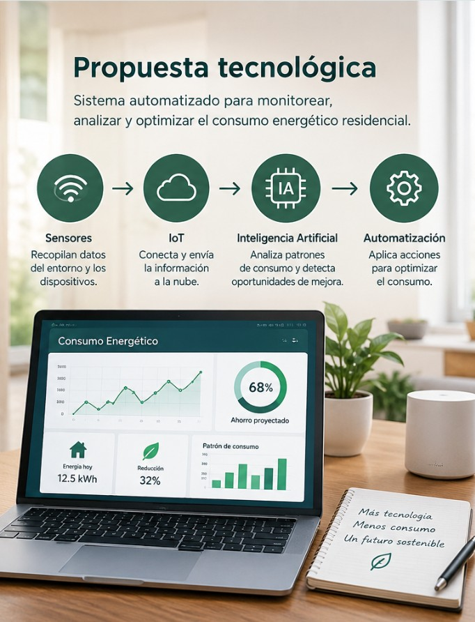

Menor consumo innecesario
Identificar situaciones relacionadas con el uso innecesario de electricidad.

Propuesta de optimización energética
Una propuesta basada en el análisis de sensores, automatización, IoT e inteligencia artificial.
Se plantea analizar sistemas automatizados capaces de monitorear y gestionar el consumo energético de manera más eficiente.

Los sensores pueden recopilar información relacionada con las condiciones del hogar y el funcionamiento de diferentes dispositivos eléctricos.
Los datos obtenidos pueden utilizarse para identificar patrones de consumo y analizar posibles estrategias de optimización.
Esta propuesta constituye una base para futuros desarrollos tecnológicos.
Los sensores recopilan información relacionada con el entorno y los dispositivos eléctricos.
La información obtenida puede ser organizada para facilitar su análisis.
Las tecnologías inteligentes pueden ayudar a reconocer patrones de consumo.
Los resultados pueden servir como base para considerar estrategias de optimización.
Identificar situaciones relacionadas con el uso innecesario de electricidad.

Obtener información que permita comprender mejor el comportamiento energético.

Integrar tecnologías inteligentes como IoT, automatización e inteligencia artificial.
El estudio realizado es de carácter documental. La propuesta sirve como base para futuras investigaciones y desarrollos tecnológicos.
En esta etapa no se contempla la construcción o implementación del sistema físico.